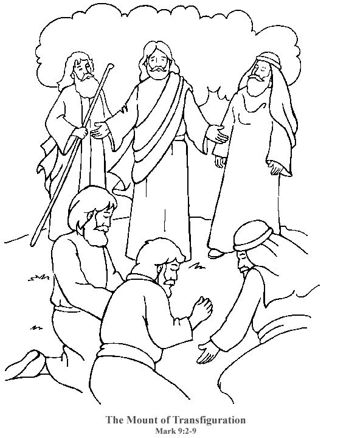

This Week: Exodus 34:29-35 Psalm 99 2 Corinthians 3:12-4:2 Luke 9:28-36, (37-43)
Middle-School Pew-work
|
28 And it came to pass about an eight days after these sayings, he took Peter and John and James, and went up into a mountain to pray.29 And as he prayed, the fashion of his countenance was altered, and his raiment was white and glistering.30 And, behold, there talked with him two men, which were Moses and Elias: |
31 Who appeared in glory, and spake of his decease which he should accomplish at Jerusalem.32 But Peter and they that were with him were heavy with sleep: and when they were awake, they saw his glory, and the two men that stood with him.33 And it came to pass, as they departed from him, Peter said unto Jesus, Master, it is good for us to be here: |
and let us make three tabernacles; one for thee, and one for Moses, and one for Elias: not knowing what he said.34 While he thus spake, there came a cloud, and overshadowed them: and they feared as they entered into the cloud.35 And there came a voice out of the cloud, saying, This is my Beloved Son: hear him! |
How do you hear Jesus speaking, as God commands us to “hear him”?
_____________________________________________________________________________
_____________________________________________________________________________
_____________________________________________________________________________
_____________________________________________________________________________
_____________________________________________________________________________
_____________________________________________________________________________
|
 |
Across 1. where the voice came from 4. the Rock 7. The Prophet of the Exodus 9. shining |
Down 2. death 3. aka Elijah 5. tents or houses 6. clothing 8. Where Jesus went to pray |
|
|
||
Next week: Next week: Deuteronomy 26:1-11 Psalm 91:1-2, 9-16 Romans 10:8b-13 Luke 4:1-13